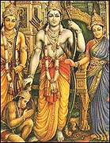

|

|
LORD SRI RAMACANDRA is a powerful incarnation of the Supreme Personality of Godhead as an ideal king. He appeared in the Treta-yuga, more than two million years ago. Under the order of His father, Maharaja Dasaratha, Lord Ramacandra lived in the Dandakaranya forest for fourteen years, along with His wife, Sita Devi, and His younger brother, Laksmana. After the powerful demon Ravana kidnapped His wife, Lord Ramacandra retrieved her, with the help of His faithful servant Hanuman, and killed Ravana along with Ravana's armies. The history of Lord Ramacandra's pastimes is recounted by the sage Valmiki in his Ramayana. (See also Srimad-Bhagavatam 1.3.22, 2.7.23-25, 5.19.1-8 and Canto Nine, chapters 10 and 11.) | |
| © 2002-2004 ISKCON |